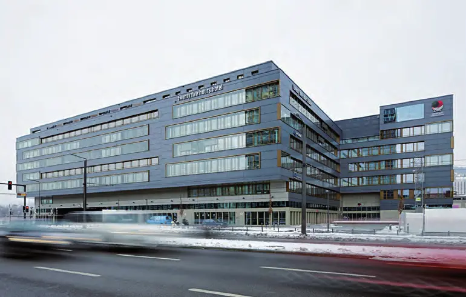
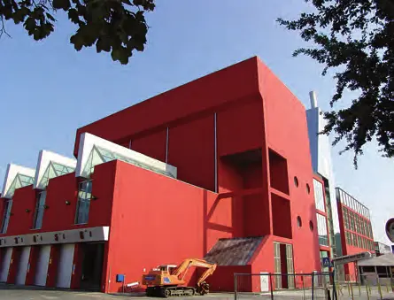
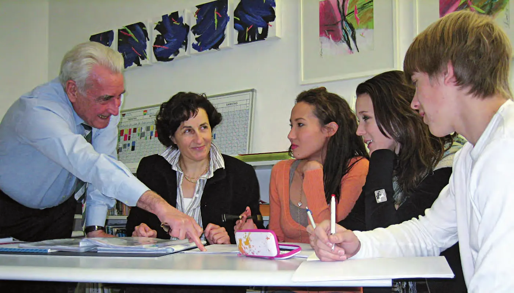
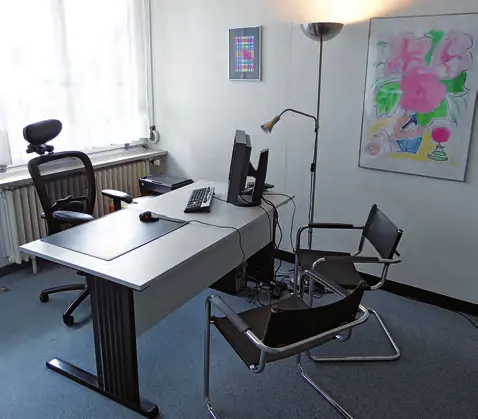
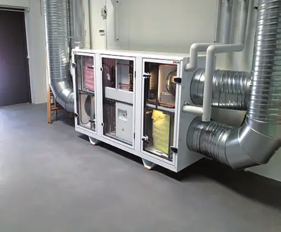
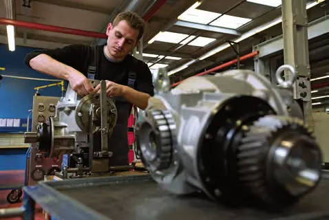
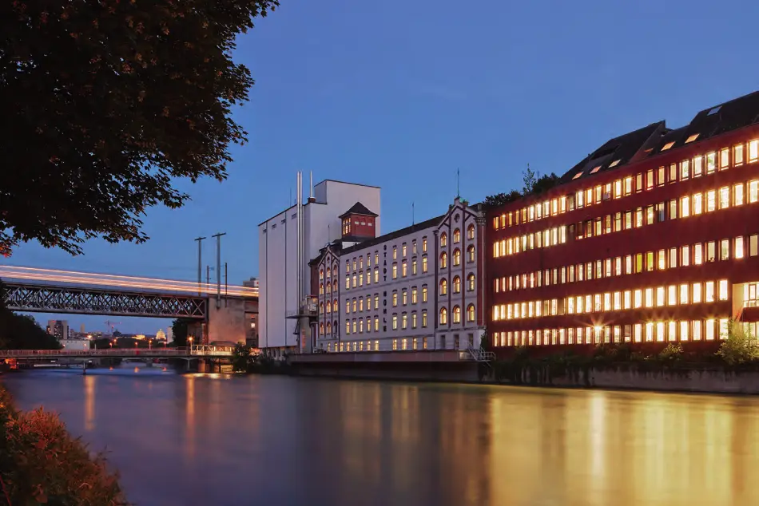
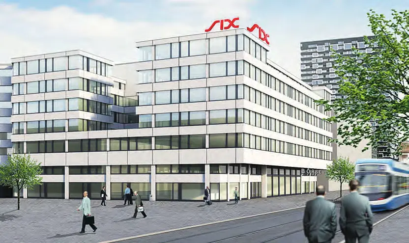

Économie régionale · 2013 · Zurich (ville et canton)
Swiss Knowhow – Zürcher Wirtschaft / Zurich Economy (2013)
Numéro bilingue allemand-anglais consacré à l'économie zurichoise, mis en page en décembre 2013. Il s'ouvre sur les interviews de la présidente de la Ville de Zurich, du directeur cantonal de l'économie et de plusieurs responsables de la Chambre de commerce zurichoise (ZHK). Suivent une vingtaine de portraits d'entreprises et d'institutions : bureaux d'architectes et d'ingénieurs, industrie, technologies, santé, formation, immobilier, ainsi que Swissmem, Swissmill et l'Hôpital universitaire.
Sommaire · 34 articles
 Interview
InterviewStadt Zürich
Interview mit Corine Mauch, Stadtpräsidentin von Zürich

Zürcher Handelskammer (ZHK)
Interview mit Dr. Karin Lenzlinger, Präsidentin ZHK
Zürcher Handelskammer (ZHK) – Direktion
Interview mit Regine Sauter, Direktorin ZHK

Volkswirtschaftsdirektion des Kantons Zürich – «Ideale Rahmenbedingungen für erfolgreiches und gesundes Wachstum schaffen»
Interview mit Regierungsrat Ernst Stocker

Zürcher Handelskammer (ZHK) – Wirtschaftswochen
Interview mit Giulia Bonaldi
Zürcher Handelskammer (ZHK) – Export-Dienstleistungen
Interview mit Giovanni Montera, Chef Beglaubigungsdienst
Zürcher Handelskammer (ZHK) – Schiedsgericht
Interview mit Elena Stancato, lic. iur., Leiterin Schiedsgerichtsabteilung
Zürcher Handelskammer (ZHK) – Direktion
Interview mit Beat Zimmermann, Stv. Direktor ZHK
aebi+kuehni ag – Headhunting neu definiert
Im Gespräch mit Doris Aebi und René Kuehni
 Interview
InterviewAtelier 10:8, Zürich
Interview mit Katrin Schubiger, Georg Rinderknecht und Jürg Senn
 Interview
Interviewatelier ww Architekten SIA AG
Interview mit Walter Wäschle, Mitinhaber und Christoph Schmid, Mitglied Geschäftsleitung

Dr. Bauingenieure J. Grob & Partner SIA/USIC AG
Interview mit Dr. Josef Grob, Geschäftsleiter
Eberhard Bau AG
Im Gespräch mit VR-Präsident Heinz Eberhard
Elex AG
Im Gespräch mit Peter Studer, Leiter Verkauf
 Interview
InterviewFabrimex Systems AG, Volketswil
Interview mit Urs Zimmermann, Managing Director
Flückiger + Bosshard AG
Im Gespräch mit Dieter Flückiger, Dr. sc. techn., dipl. Bauing. ETH, Geschäftsleitung

Gebrüder Loepfe AG
Im Gespräch mit Maurizio Wermelinger, CEO und Delegierter des Verwaltungsrates

InterviewHardturm AG, Zürich
Interview mit Vincent Albers, Verwaltungsratspräsident Hardturm AG

Havells-Sylvania Switzerland AG
Fragen an Thomas Rauscher, Geschäftsführer

H-Net AG – innovative eHealth-Lösungen
Im Gespräch mit Geschäftsführer Michael Ziegler
IMT Masken und Teilungen AG, Greifensee
Interview mit Dr. Jean-François Willemin, Geschäftsleiter
ITPC AG, Zürich
Interview mit Vincenzo Boesch, CEO und Technology Lead

InterviewJakob Stiefel GmbH
Im Gespräch mit Geschäftsführer Martin Stiefel
 Interview
InterviewKlinik Susenberg, Zürich – Umfassende Betreuung in schwierigen Lebenslagen
Interview mit Dr. Christel Nigg, Leitende Ärztin und Dr. Nic Zerkiebel, Chefarzt

InterviewLernpädagogisches Zentrum Zürich
Interview mit Ruth Gisler, Schulleitung und Claude Jubin, Stellvertreter Schulleitung LPZ
LUZI AG
Im Gespräch mit Geschäftsführer Jürg Koller

InterviewMedizinisches Zentrum Römerhof
Im Gespräch mit Dr. med. Galleon Graetz, Facharzt FMH für Innere Medizin
 Interview
InterviewMeworla GmbH
Im Gespräch mit Geschäftsführer Michael Baumer

InterviewNilan AG
Im Gespräch mit Geschäftsführerin Stina Andersen
Pöyry Schweiz AG
Interview mit Martin Bachmann, Executive Vice President der Pöyry PLC und Verwaltungsratspräsident der Pöyry Schweiz AG
 Interview
InterviewSpannverbund Bausysteme GmbH
Interview mit Paul Horn, Geschäftsführer, Verkauf Schweiz

InterviewSwissmem
Im Gespräch mit Peter Dietrich, Direktor

PublireportageDie Qualitätsmühle mitten in Zürich
Nachhaltigkeit als Antrieb der grössten Mühle der Schweiz
 Interview
InterviewUniversitätsSpital Zürich
Im Gespräch mit Spitaldirektorin Rita Ziegler
Entreprises de ce numéro · 29
aebi+kuehni ag
Chasse de têtes (executive search)
atelier 10:8 gmbh
Bureau d'architecture et d'urbanisme
atelier ww Architekten SIA AG
Bureau d'architectes
Dr. J. Grob & Partner AG, Bauingenieure SIA/USIC
Bureau d'ingénieurs civils
Eberhard Bau AG (Eberhard Unternehmungen)
Génie civil, déconstruction, assainissement et recyclage

ELEX AG
Épuration des gaz de fumée
Fabrimex Systems AG
Informatique industrielle et vision
Flückiger + Bosshard AG
Bureau d'ingénieurs civils
Gebrüder Loepfe AG
Systèmes de contrôle pour l'industrie textile

H-Net AG
Logiciels eHealth et échange de données médicales

Hardturm AG
Développement immobilier
Havells-Sylvania Switzerland AG
Lampes et luminaires
IMT Masken und Teilungen AG
Microstructures et couches minces sur verre
ITPC AG
Conseil et exploitation SAP
Jakob Stiefel GmbH
Installations de valorisation thermique des déchets
Klinik Susenberg
Clinique de gériatrie aiguë, réadaptation oncologique et soins palliatifs
Lernpädagogisches Zentrum AG (LPZ)
Ecole privée et soutien scolaire
LUZI AG
Compositions parfumées
Medizinisches Zentrum Römerhof (MZR)
Centre médical

Meworla GmbH
Systèmes d'information et CRM
Nilan AG
Ventilation et pompes à chaleur
Pöyry Schweiz AG
Ingénierie et conseil
Spannverbund Bausysteme GmbH
Systèmes de construction mixte acier-béton

Stadt Zürich – Präsidialdepartement
Administration communale
Swissmem
Association de l'industrie MEM
Swissmill (Division der Coop Genossenschaft)
Meunerie

UniversitätsSpital Zürich (USZ)
Hôpital universitaire
Volkswirtschaftsdirektion des Kantons Zürich
Administration cantonale
Zürcher Handelskammer (ZHK)
Chambre de commerce
Aucun résultat.